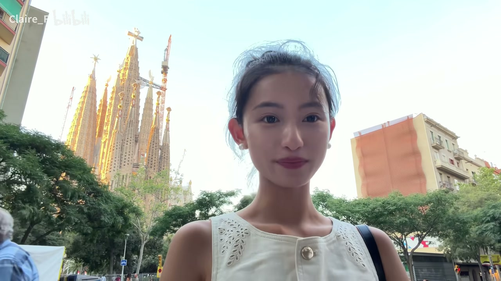
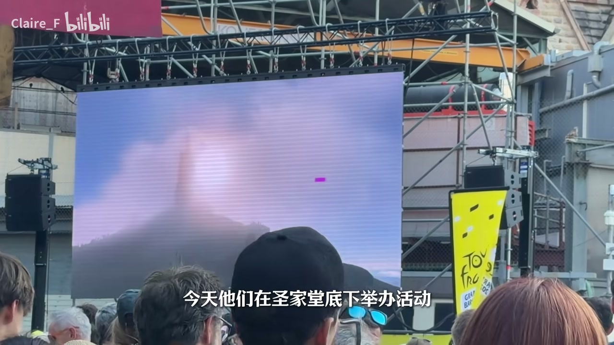
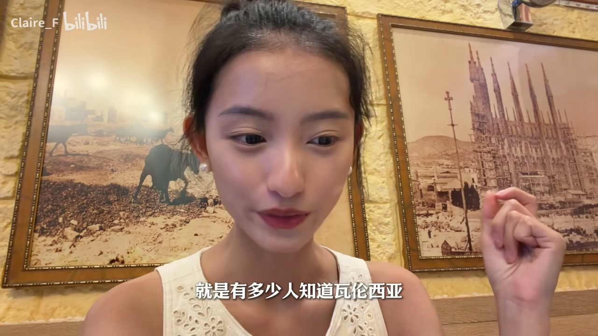

高速路上的假交警：包被偷了
00:00今天没有高质量的视频和充满能量的博主，因为我的所有东西都在这里被偷了。欢迎收看漫游西班牙系列第七期——充满了遗憾的巴塞罗那。
00:20你可能以为自驾游就不会被偷东西、不会被抢——我们就是因为这个选择自驾游，结果没有被抢，还是被偷了，防不胜防。
00:30正在高速路上正常行驶，有一辆车一直在逼我们，逼停以后，那个人穿着交警的工作服，下来冲着我们一直喊'on fire on fire your car is on fire'（你的车着火了）。
00:50他吸引了我和我妈妈、舅舅三个人的注意，指着车屁股后面。我们很着急地回头看怎么了，他指着轮胎开始放气，一边放一边说'you have to wait here'。
01:30他非常着急地说了一会儿然后就立刻跑了。上车以后我说：到底怎么回事？车一表盘显示一切正常，也没觉得哪里起火。那个人看起来不像帮忙——以前在美国遇到车出情况，别人帮你忙会很耐心地陪着你解决问题，可那个人看起来不像来解决问题的。
01:50突然反应过来：我包呢？我的化妆包特别大一个立在这车中间，还有我随身包。现在正在去巴塞罗那的路上，最重要的两个地方（巴塞罗那、马德里，还有周围的托萨）——我没有设备，没有化妆品，真的是想哭哭不出来。他还把我们轮胎气放了，这样你追不上他。

- 假交警喊'on fire'吸引注意，指车尾、放轮胎气
- 以'you have to wait here'稳住三人，随后立即逃离
- 抢走化妆包+随身包+相机设备，放气防止追赶
报警无门：警局与保险公司的冷漠
02:20被放气后只能停在路边打电话报警。警察不理你，说那你得先去警察局报案。我说我报不了案，我的轮胎没有气了，我们现在下不去。
02:40他说那你打电话给你的保险公司吧，我们帮不了你。我们只能慢慢地往下开，去找加油站加气补上。
02:50路上有个真的交警给我们指路，我们还不敢理他——妈妈都有 PTSD 了。妈妈想撞人家（开玩笑）。相机确实很值钱。他抢了我一大个化妆包，死重怪重的，他抢过去也不知道干嘛（确实用过的）。
03:10结果他们（小偷）就一直刷小钱一直刷一直刷，刷了很多。银行平时防诈骗防得很严，结果现在挂失要问一大堆问题，关键打一个电话打半天才打通。
没有心情拍照的巴塞罗那
03:40从这个山顶上可以看到圣家堂的感觉。我的 iPhone 不比我的长焦镜头差太多——确实是没有什么心情拍照。本来这里是我最期待要来拍照的地方。
04:00预订了最佳的一架 Sephora 距离我 700 米，10 点融关门现在就要关门了。这 Sephora 太小了，买东西也没买成，还被人家赶出来了。
04:20想起一件更让人纳闷的事：我的大疆买了随心换，但是随心换是它坏了给你随心换，那我被抢了它不算啊，那我随心换也白买了。
04:40用我能买到的三样化妆品化了的妆。这本来应该是我最喜欢的条裙子。这次我把相机丢了，买个新的——最开心的是他看到了索尼的 V7（a7？）这么小一个，开心死了，因为之前的长焦都是他在背。
巴特罗之家：海洋主题的富商攀比
05:00第一个来到的是巴特罗之家。没有大疆收音也没办法继续一贯的现场口播风格。总之巴特罗之家是富商巴特罗请高迪来改造自己的家，整栋住宅都以海洋为主题。
05:20旁边那栋则是巧克力商人的家。当时这条街上的富商都为了攀比请来不同的建筑师改造房子，风格一个比一个夸张，所以最后这里就被叫做'不和谐街区'。
米拉之家：只有曲线的建筑
05:40米拉之家也是米拉找高迪设计的房子，但这次有钱的是米拉区的寡妇。不过大家都知道高迪的设计只有曲线没有直线——毕竟'直线是属于上帝的'。
06:00米拉夫人气死了，她想要的是传统的贵族豪宅，而不是这样奇形怪状的建筑。
- 高迪的座右铭：只有曲线没有直线，'直线是属于上帝的'
- 米拉夫人想要传统贵族豪宅，对高迪的曲线设计很生气
圣家堂：封顶的森林
06:10终于要建了100年终于封顶了第五个（？）圣家堂。因为它实在是太火爆了，这次因为它封顶了，然后我们一个月前开始买票就已经买不到。我们这个又遗憾又崩溃的巴塞罗那之旅。
06:30非常不幸，今天他们在圣家堂底下举办活动都没有办法拍照。但是没关系，我最后还是等到了他们结束活动，拍了点照。
06:50我看到网上一些人会把圣家堂说成哥特式教堂，但其实它并不是传统意义上的哥特式，只是吸收了哥特式建筑的一些特点。传统哥特式建筑为了把建筑修得更高、把窗户开得更大，通常需要在外墙上加一排飞扶壁——从外墙把墙体和拱顶给撑住。
07:10但高迪不喜欢这种设计，他觉得这些外部的支撑就像是给建筑架了一排拐杖。所以他换了一种更自然的解决方式——就像巴特罗之家的灵感来自海洋一样，圣家堂内部的灵感则来自森林和参天大树。
07:30高迪把教堂里的柱子设计成树的结构，让它们向上延伸以后不断分岔，就像树枝一样撑起屋顶，再把重量一路传到地面。这样圣家堂就不需要依赖那些传统的密密麻麻的飞扶壁，内部却依然可以做得很高很开阔，也可以让大量的自然光透过彩色玻璃照进来。

蜗牛兔子饭：西班牙海鲜饭的始祖
08:00一时半会儿看不了圣家堂，来圣家堂旁边的店吃个海鲜饭吧。我又点了一份牛尾——这次是红酒做牛尾。还有西班牙海鲜饭。但其实不是西班牙海鲜饭，是蜗牛兔子饭。
08:20有多少人知道西班牙海鲜饭（paella）的发源地？最早的西班牙海鲜饭是没有海鲜的——当地的人拿一些乱七八糟的鸡肉、兔肉、蜗牛、豆类混在一起的饭。到了后面才有了海鲜，然后被我们翻译成'西班牙海鲜饭'。所以今天我们就尝一下这个最早的兔肉蜗牛版本。
08:40可能因为我点的（失败了），它这个牛尾没有我们在安德鲁家、在任何地方吃的好吃。
- paella 早期版本：鸡肉+兔肉+蜗牛+豆类的杂烩饭
- 后来才加入海鲜，被中文翻译成'西班牙海鲜饭'
- 今天的兔肉蜗牛饭：原汁原味的历史版本
带着 PTSD 告别巴塞罗那
09:10妈妈完全被偷出 PTSD 了。她今天出门非要背两个包，我说你为什么非要背两个包？她说我两个信用卡、两个手机放在不同的包里，只要她抢我一个包，我还有一个包。
09:30人太多了，罢了，和这个美丽的地方说再见吧。好不容易走到了一个可以打车的地方，等那个车要等20分钟，要过去要半个小时，等我们到那儿就已经天黑了，什么都看不了。
09:50巴塞罗那地铁好贵，单人单程的地铁要我付…（贵到不如）打车回去只要8欧。但是打不到车。我最喜欢的裙子都留给巴塞罗那了。巴塞罗那，你就这么对我，对我三个小时了。
